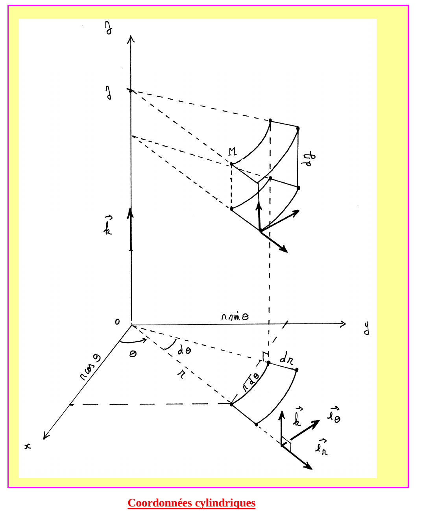
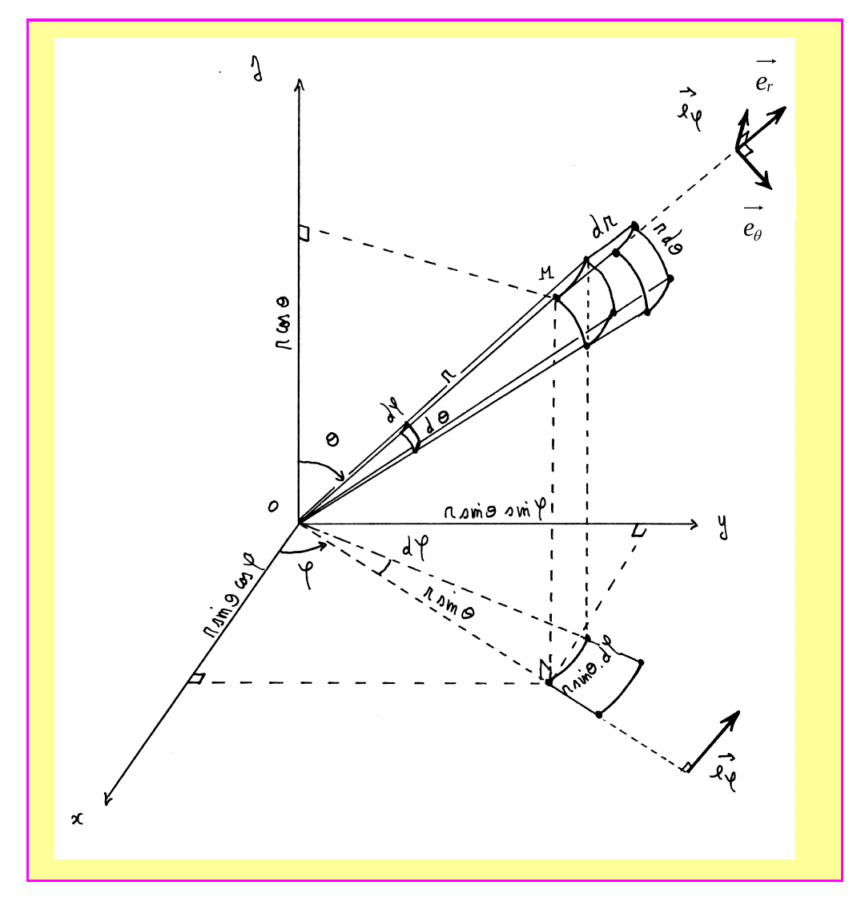

Mécanique 1 — Cinématique du point
1. Systèmes de coordonnées
Définition 1
$$\text{Cartésiennes : } \overrightarrow{OM}=x\,\vec e_x+y\,\vec e_y+z\,\vec e_z$$
$$\text{Cylindriques : } \overrightarrow{OM}=r\,\vec e_r+z\,\vec e_z = (r\cos\theta)\vec e_x+(r\sin\theta)\vec e_y+z\,\vec e_z$$
$$\text{Sphériques : } \overrightarrow{OM}=r\,\vec e_r = (r\sin\theta\cos\varphi)\vec e_x+(r\sin\theta\sin\varphi)\vec e_y+(r\cos\theta)\vec e_z$$
$$\text{Curvilignes : } s(M)=\text{longueur de l'arc } \overset{\frown}{OM}, \ O \text{ point fixe (origine des arcs)}$$


2. Vecteur vitesse
Théorème 1 — dérivées des vecteurs de base polaires
$$\frac{d\vec e_r}{d\theta} = \vec e_\theta \qquad \frac{d\vec e_\theta}{d\theta} = -\vec e_r$$
Théorème 2
$$\text{Cylindriques : } \vec v = \frac{d\overrightarrow{OM}}{dt} = \frac{dr}{dt}\vec e_r + r\frac{d\theta}{dt}\vec e_\theta + \frac{dz}{dt}\vec e_z$$
$$\text{Curvilignes : } \vec v = \frac{d\overrightarrow{OM}}{dt} = \frac{ds}{dt}\vec e_T \qquad \left(\vec e_T=\frac{d\overrightarrow{OM}}{ds}\text{ : unitaire, tangent à la trajectoire}\right)$$
3. Vecteur accélération
Théorème 3
$$\text{Cylindriques : } \vec a = \frac{d^2\overrightarrow{OM}}{dt^2} = \left[\frac{d^2r}{dt^2}-r\left(\frac{d\theta}{dt}\right)^2\right]\vec e_r + \left[r\frac{d^2\theta}{dt^2}+2\frac{dr}{dt}\frac{d\theta}{dt}\right]\vec e_\theta + \frac{d^2z}{dt^2}\vec e_z$$
$$\text{Curvilignes : } \vec a = \frac{d^2s}{dt^2}\vec e_T + \frac{(ds/dt)^2}{\rho}\vec e_N \qquad \left(\frac{d\vec e_T}{ds}=\frac{\vec e_N}{\rho},\ \vec e_N\text{ unitaire centripète}\right)$$
4. Éléments de surface et de volume
Théorème 4
$$\text{Sphériques : } dV = r^2\sin\theta\,dr\,d\theta\,d\varphi \qquad dS = r^2\sin\theta\,d\theta\,d\varphi \text{ (sphère de rayon $r$)}$$
$$\text{Cylindriques : } dV = r\,dr\,dz\,d\theta \qquad dS = r\,dz\,d\theta \text{ (cylindre de rayon $r$)}$$
Quiz de fin de chapitre
1. Quelle est la différence entre les coordonnées cylindriques et sphériques pour repérer un point $M$ ?
Réponse
Les coordonnées cylindriques $(r,\theta,z)$ utilisent la distance à l'axe $Oz$ ($r$), l'angle azimutal $\theta$, et la cote $z$ le long de l'axe (Définition 1). Les coordonnées sphériques $(r,\theta,\varphi)$ utilisent la distance à l'origine $O$ elle-même ($r$), l'angle polaire $\theta$ (depuis l'axe $Oz$) et l'angle azimutal $\varphi$ — la différence essentielle est que $r$ mesure une distance à un axe dans un cas, à un point dans l'autre.
Les coordonnées cylindriques $(r,\theta,z)$ utilisent la distance à l'axe $Oz$ ($r$), l'angle azimutal $\theta$, et la cote $z$ le long de l'axe (Définition 1). Les coordonnées sphériques $(r,\theta,\varphi)$ utilisent la distance à l'origine $O$ elle-même ($r$), l'angle polaire $\theta$ (depuis l'axe $Oz$) et l'angle azimutal $\varphi$ — la différence essentielle est que $r$ mesure une distance à un axe dans un cas, à un point dans l'autre.
2. Qu'est-ce que le vecteur $\vec e_T$ dans les coordonnées curvilignes ?
Réponse
C'est le vecteur unitaire tangent localement à la trajectoire, défini par $\vec e_T=d\overrightarrow{OM}/ds$ (Théorème 2) — il pointe toujours dans le sens du mouvement (sens croissant de l'abscisse curviligne $s$).
C'est le vecteur unitaire tangent localement à la trajectoire, défini par $\vec e_T=d\overrightarrow{OM}/ds$ (Théorème 2) — il pointe toujours dans le sens du mouvement (sens croissant de l'abscisse curviligne $s$).
3. Un point décrit un cercle de rayon $R=2\,\text{m}$ à vitesse angulaire constante $\dot\theta=3\,\text{rad/s}$ (donc $r=R$ constant, $\dot r=0$). Calculer la norme de la vitesse.
Réponse
$\vec v = \dot r\,\vec e_r+r\dot\theta\,\vec e_\theta = 0+2\times3\,\vec e_\theta=6\,\vec e_\theta$ (Théorème 2), donc $\|\vec v\|=6\,\text{m/s}$.
$\vec v = \dot r\,\vec e_r+r\dot\theta\,\vec e_\theta = 0+2\times3\,\vec e_\theta=6\,\vec e_\theta$ (Théorème 2), donc $\|\vec v\|=6\,\text{m/s}$.
4. Pour le même mouvement circulaire (question 3), calculer la norme de l'accélération.
Réponse
$\vec a = [\ddot r-r\dot\theta^2]\vec e_r+[r\ddot\theta+2\dot r\dot\theta]\vec e_\theta = [0-2\times9]\vec e_r+[0+0]\vec e_\theta=-18\,\vec e_r$ (Théorème 3), donc $\|\vec a\|=18\,\text{m/s}^2$ (accélération purement centripète, cohérent avec un mouvement circulaire uniforme).
$\vec a = [\ddot r-r\dot\theta^2]\vec e_r+[r\ddot\theta+2\dot r\dot\theta]\vec e_\theta = [0-2\times9]\vec e_r+[0+0]\vec e_\theta=-18\,\vec e_r$ (Théorème 3), donc $\|\vec a\|=18\,\text{m/s}^2$ (accélération purement centripète, cohérent avec un mouvement circulaire uniforme).
5. Pourquoi l'accélération en coordonnées cylindriques (Théorème 3) contient-elle un terme $-r\dot\theta^2$ même si $r$ ne varie pas dans le temps ?
Réponse
Ce terme traduit l'accélération centripète, nécessaire pour courber la trajectoire même à $r$ constant (mouvement circulaire) : le vecteur $\vec e_r$ lui-même tourne au cours du temps (Théorème 1, $d\vec e_r/d\theta=\vec e_\theta$), donc même si $r$ est constant, $\overrightarrow{OM}=r\vec e_r$ change de direction, ce qui produit une accélération non nulle dirigée vers le centre.
Ce terme traduit l'accélération centripète, nécessaire pour courber la trajectoire même à $r$ constant (mouvement circulaire) : le vecteur $\vec e_r$ lui-même tourne au cours du temps (Théorème 1, $d\vec e_r/d\theta=\vec e_\theta$), donc même si $r$ est constant, $\overrightarrow{OM}=r\vec e_r$ change de direction, ce qui produit une accélération non nulle dirigée vers le centre.
6. Que se passerait-il dans le repère de Frenet (Théorème 3) si la trajectoire devenait rectiligne (rayon de courbure $\rho\to\infty$) ?
Réponse
Le terme $(ds/dt)^2/\rho \to 0$ : l'accélération se réduit à sa seule composante tangentielle $\ddot s\,\vec e_T$ — cohérent avec le fait qu'en ligne droite, il n'y a plus d'accélération centripète (pas de changement de direction de la vitesse), seulement une éventuelle variation de sa norme.
Le terme $(ds/dt)^2/\rho \to 0$ : l'accélération se réduit à sa seule composante tangentielle $\ddot s\,\vec e_T$ — cohérent avec le fait qu'en ligne droite, il n'y a plus d'accélération centripète (pas de changement de direction de la vitesse), seulement une éventuelle variation de sa norme.
7. Piège classique : peut-on dire que $\vec v=\dot r\,\vec e_r$ en coordonnées cylindriques, en négligeant le terme en $\vec e_\theta$ ?
Réponse
Non — c'est un piège fréquent qui n'est valable que si $\theta$ est constant (mouvement purement radial). En général, $\vec v = \dot r\,\vec e_r + r\dot\theta\,\vec e_\theta$ (Théorème 2) : le terme $r\dot\theta\,\vec e_\theta$ traduit la contribution de la rotation à la vitesse, souvent oublié si l'on confond la dérivée de $\overrightarrow{OM}$ avec la seule dérivée de la coordonnée $r$.
Non — c'est un piège fréquent qui n'est valable que si $\theta$ est constant (mouvement purement radial). En général, $\vec v = \dot r\,\vec e_r + r\dot\theta\,\vec e_\theta$ (Théorème 2) : le terme $r\dot\theta\,\vec e_\theta$ traduit la contribution de la rotation à la vitesse, souvent oublié si l'on confond la dérivée de $\overrightarrow{OM}$ avec la seule dérivée de la coordonnée $r$.
8. Piège classique : dans $d\vec e_r/d\theta=\vec e_\theta$ (Théorème 1), pourquoi ne peut-on pas simplement dire que $\vec e_r$ est un vecteur « constant » puisqu'il est toujours unitaire ?
Réponse
Être unitaire (norme constante égale à 1) n'implique pas être un vecteur constant : $\vec e_r$ change de direction lorsque $\theta$ varie, même si sa norme reste 1. C'est exactement pour cette raison que sa dérivée $d\vec e_r/d\theta$ n'est pas nulle, mais égale à $\vec e_\theta$ (un vecteur orthogonal, traduisant ce changement de direction) — piège classique de confondre « norme constante » et « vecteur constant ».
Être unitaire (norme constante égale à 1) n'implique pas être un vecteur constant : $\vec e_r$ change de direction lorsque $\theta$ varie, même si sa norme reste 1. C'est exactement pour cette raison que sa dérivée $d\vec e_r/d\theta$ n'est pas nulle, mais égale à $\vec e_\theta$ (un vecteur orthogonal, traduisant ce changement de direction) — piège classique de confondre « norme constante » et « vecteur constant ».
9. Synthèse : reliez le repère de Frenet $(\vec e_T,\vec e_N)$ (§3) au repère polaire $(\vec e_r,\vec e_\theta)$ (§1-2) dans le cas particulier d'un mouvement circulaire de rayon $R$ centré à l'origine.
Réponse
Pour un cercle de rayon $R$ centré en $O$, la trajectoire coïncide avec les lignes de coordonnée $r=R$ constant : le vecteur tangent $\vec e_T$ (Théorème 2) est alors exactement $\vec e_\theta$ (direction du mouvement le long du cercle), et le vecteur normal centripète $\vec e_N$ (Théorème 3) est exactement $-\vec e_r$ (pointant vers le centre $O$, opposé à $\vec e_r$ qui pointe vers l'extérieur). Les deux descriptions (Frenet intrinsèque et polaire) deviennent alors identiques, ce qui explique que l'accélération centripète $v^2/\rho$ (Frenet) et le terme $-r\dot\theta^2$ (polaire) coïncident exactement pour $\rho=R=r$ constant.
Pour un cercle de rayon $R$ centré en $O$, la trajectoire coïncide avec les lignes de coordonnée $r=R$ constant : le vecteur tangent $\vec e_T$ (Théorème 2) est alors exactement $\vec e_\theta$ (direction du mouvement le long du cercle), et le vecteur normal centripète $\vec e_N$ (Théorème 3) est exactement $-\vec e_r$ (pointant vers le centre $O$, opposé à $\vec e_r$ qui pointe vers l'extérieur). Les deux descriptions (Frenet intrinsèque et polaire) deviennent alors identiques, ce qui explique que l'accélération centripète $v^2/\rho$ (Frenet) et le terme $-r\dot\theta^2$ (polaire) coïncident exactement pour $\rho=R=r$ constant.
10. Synthèse : un satellite décrit une trajectoire elliptique (donc $r$ varie au cours du temps). Expliquez, à partir de la formule complète de l'accélération en coordonnées cylindriques/polaires (Théorème 3), pourquoi on ne peut pas se contenter du terme centripète $-r\dot\theta^2$ pour décrire complètement son mouvement, contrairement au cas circulaire (question 3-4).
Réponse
Sur une trajectoire elliptique, $r$ varie avec le temps ($\dot r\neq0$, $\ddot r\neq0$ en général) : la composante radiale complète de l'accélération est $\ddot r - r\dot\theta^2$ (Théorème 3), qui contient un terme supplémentaire $\ddot r$ (accélération liée à la variation de distance) absent dans le cas circulaire où $r$ est constant. De même, la composante orthoradiale $r\ddot\theta+2\dot r\dot\theta$ contient un terme de Coriolis $2\dot r\dot\theta$ (couplage entre variation radiale et rotation), également nul si $r$ est constant. C'est cette richesse de la formule générale (Théorème 3) qui permet de décrire des trajectoires non circulaires, comme les orbites elliptiques étudiées au chapitre des forces centrales.
Sur une trajectoire elliptique, $r$ varie avec le temps ($\dot r\neq0$, $\ddot r\neq0$ en général) : la composante radiale complète de l'accélération est $\ddot r - r\dot\theta^2$ (Théorème 3), qui contient un terme supplémentaire $\ddot r$ (accélération liée à la variation de distance) absent dans le cas circulaire où $r$ est constant. De même, la composante orthoradiale $r\ddot\theta+2\dot r\dot\theta$ contient un terme de Coriolis $2\dot r\dot\theta$ (couplage entre variation radiale et rotation), également nul si $r$ est constant. C'est cette richesse de la formule générale (Théorème 3) qui permet de décrire des trajectoires non circulaires, comme les orbites elliptiques étudiées au chapitre des forces centrales.
Sources
- Document source : « Cinématique du point » (résumé de cours, Prépa Barthou, Pau)
- Programme officiel de Physique-Chimie, CPGE 1re année (filière PCSI), bloc « Cinématique du point » : enseignementsup-recherche.gouv.fr
- H-Prépa Physique 1re année (Hachette Éducation) — chapitre « Description du mouvement d'un point »